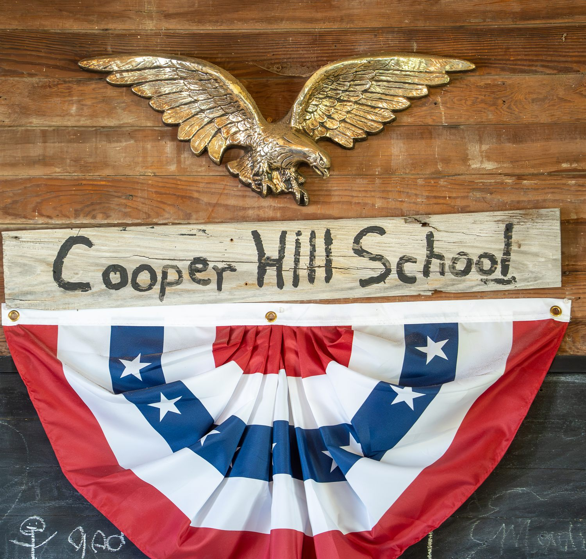
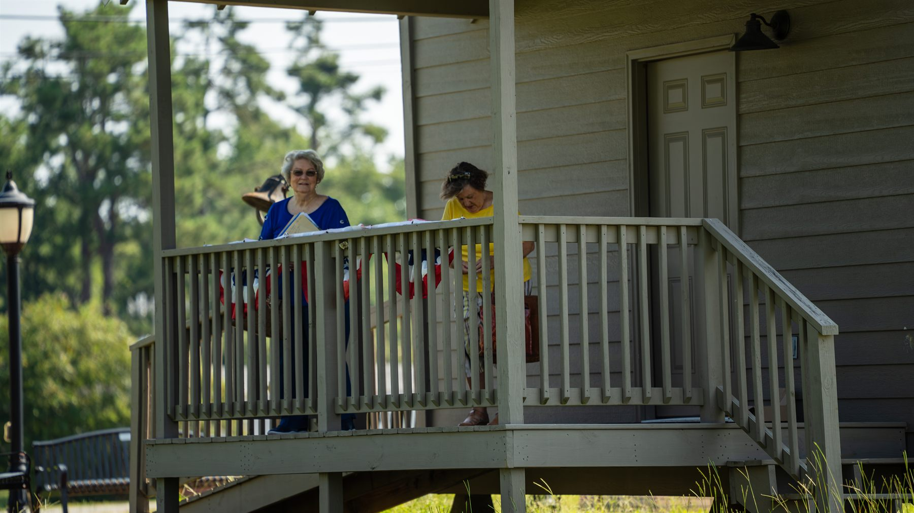
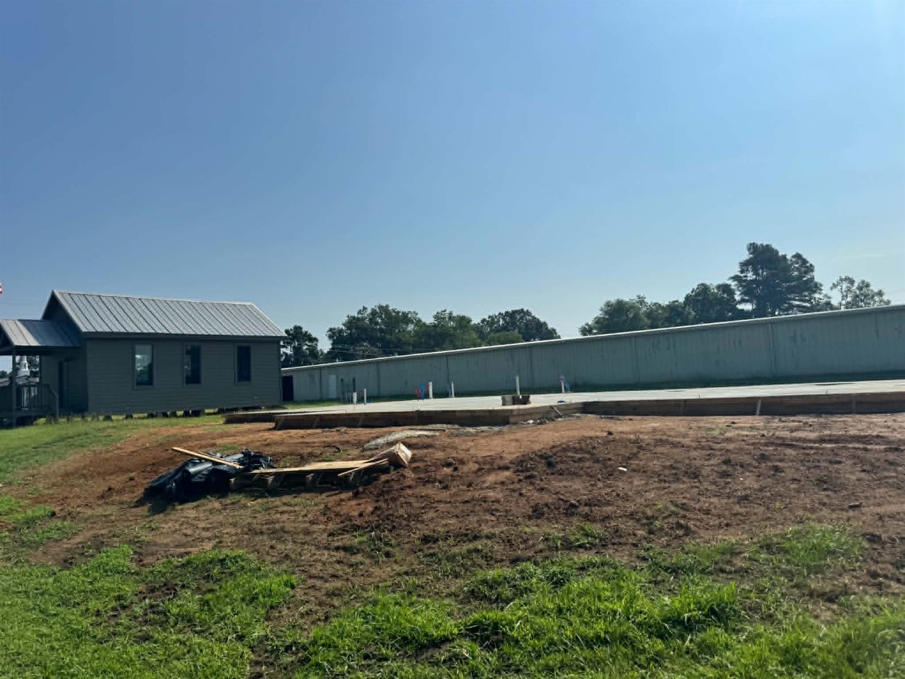

Cooper Hill School House
Established between 1856 and 1869 by James H. Cooper — a schoolmaster who became postmaster at eighty-two. Believed to be the only one-room, one-teacher school still standing in Tippah County.
The school’s story
“Preserving the past for Falkner’s future generations.”
Saturday, September 26, 2026 · 8 AM – 2 PM at Falkner Heritage Park. Jeeps, classic and vintage cars, barbecue and hotdogs, oldies music, raffle tickets and a 50-50 drawing — with a $20 donation entry fee that goes toward the Community Center.
Park events are one way this organization funds its projects. Come to one, show a car, or stay for lunch: it all counts.
The Falkner Heritage Museum Project is a non-profit organization founded in 2016 by the citizens of Falkner, Mississippi to save what remains of an Old Town that once thrived beside the tracks — and to build something the next generation can use.
The original Falkner Depot stood here until the 1970s, when the railway ceased operation. The Depot was removed and the old stores were demolished. What the town could not keep in buildings, it has kept in photographs, ledgers, heirlooms, monuments, and memory — and, increasingly, in the buildings it has brought back.
Today Falkner Heritage Park holds the museum, the original Cooper Hill School House, memorial gardens and monuments, and the rising foundation of a Community Center built to replicate the Depot that once stood a few steps away.

Everything sits together on one quiet corner of Old Town Falkner, just off Highway 15 on CR 200, behind City Hall.

Established between 1856 and 1869 by James H. Cooper — a schoolmaster who became postmaster at eighty-two. Believed to be the only one-room, one-teacher school still standing in Tippah County.
The school’s story
The Memorial Garden, the Ayers Family Memorial and Flag Pole, the Veteran’s Monument, Falkner’s State Plaque, a wooded grove of donated benches and streetlights, the Gazebo and a Little Library.
Plan a visit
A 1,980 sq ft gathering place built in the image of the Depot that once stood nearby. The foundation is funded and poured. Framing and roofing come next.
Follow the project
The Falkner Heritage Community Center will measure 30′ × 60′ with an 8′ × 20′ entry, and its design replicates the original Falkner Depot that once stood near this very site. Inside: a large gathering room for Town and Community socials, special events and museum displays; a meeting room; storage; restrooms; and a full-sized kitchen for community gatherings and receptions.
Phase 1 — the foundation and slab — has been funded entirely by donations and is complete. The Town of Falkner is now taking estimates for Phase 2: framing and roofing.
In 1870 Colonel William Falkner celebrated the completion of his original Ripley Railroad branch, running from New Albany, Mississippi through Falkner to Middleton, Tennessee. The town is the Colonel’s namesake, and the beginning of the original Town of Falkner.
The Colonel was a Confederate officer, a railroad builder and a best-selling novelist — and the great-grandfather of William Faulkner, who added the “u” and won the Nobel Prize in Literature. The town on Highway 15 shares more than a spelling with him.
These gatherings are fundraisers. They are one of the ways the Heritage Park, the Museum and the Community Center Project get paid for.
Jeeps, classic and vintage cars in the park from 8 AM to 2 PM, with barbecue, hotdogs, oldies music and a 50-50 drawing. $20 donation entry.
Event details
The park’s biggest day: a car show, food vendors, crafts, yard sales, raffles and activities for children.
This year’s plansHeirloom and vintage quilts — family treasures from across Tippah County — hung in the Cooper Hill School House for the day.
Learn moreFunding for the Falkner Heritage Park projects has come entirely from supporters and volunteers, local businesses and community efforts, banks, schools and churches, project sales and special events — and from generous donations, one at a time.
Send donations to:
Falkner Heritage
PO Box 113
Falkner, MS 38629